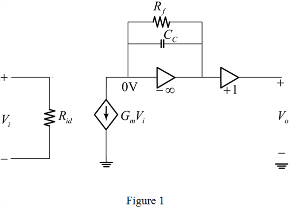
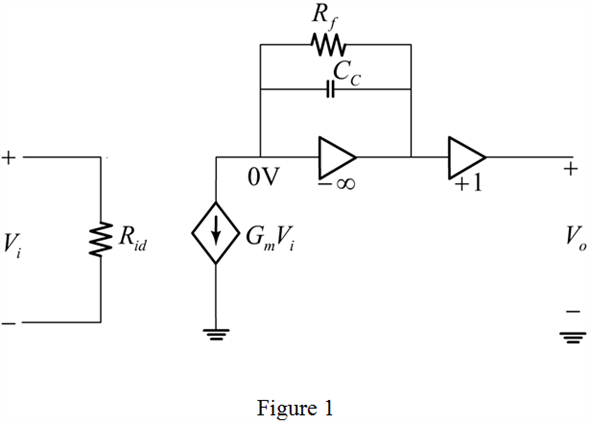
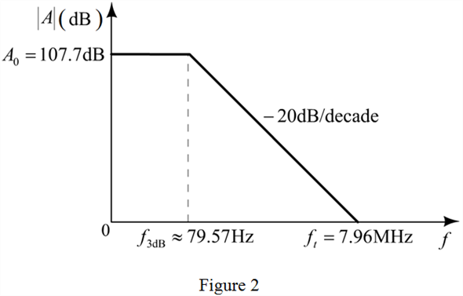

Refer to Figure 12.33 in the textbook for the integrator op-amp model.
The resistance, is shunting the capacitance,  . Now the required relevant circuit is shown in Figure 1.
. Now the required relevant circuit is shown in Figure 1.

Refer to Figure 12.33 in the textbook for the integrator op-amp model.
The resistance, is shunting the capacitance, . Now the required relevant circuit is shown in Figure 1.

Here,  is shunting CC. Hence the ideal integrator is converted to a practical integrator. For a practical integrator, the frequency expression is,
is shunting CC. Hence the ideal integrator is converted to a practical integrator. For a practical integrator, the frequency expression is,
Substitute and 100 pF for 
Write the expression for 
Substitute 5 mA/V for and 100 pF for
The required Bode plot for the magnitude of the open loop gain is shown in Figure 2.

Hence, the Bode plot is drawn.
The relation between and the first stage bias current is,
The relation between  and slew rate is,
and slew rate is,
Substitute.
Substitute 25 mV for  and 7.96 MHz for
and 7.96 MHz for
Thus, the slew rate is, .